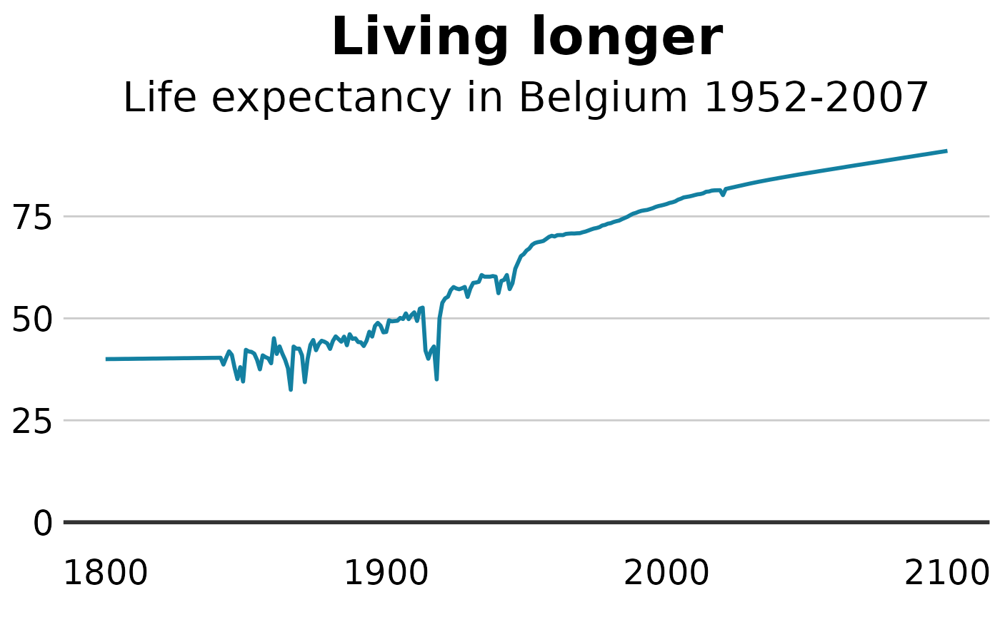

Create Sciensano Graphs
a-create-graph.RmdHow to create Sciensano style graphics
At the R User Group of Sciensano, we have developed an R package and an R cookbook to make the process of creating publication-ready graphics in our in-house style using R’s ggplot2 library a more reproducible process, as well as making it easier for people new to R to create graphics.
The cookbook below should hopefully help anyone who wants to make graphics like these:
Load all the libraries you need
A few of the steps in this cookbook - and to create charts in R in general - require certain packages to be installed and loaded.
library(ggsano) ## style
library(dplyr) ## data management
#>
#> Attaching package: 'dplyr'
#> The following objects are masked from 'package:stats':
#>
#> filter, lag
#> The following objects are masked from 'package:base':
#>
#> intersect, setdiff, setequal, union
library(tidyr) ## data management
library(ggplot2) ## plotHow does the ggsano package work?
The package has two functions, sciensano_style() and finalise_plot().
sciensano_style(): has no arguments and is added to the ggplot ‘chain’ after you have created a plot. What it does is generally makes text size, font and colour, axis lines, axis text, margins and many other standard chart components into Sciensano style, which has been formulated based on recommendations and feedback from the design team.
Note that colours for lines in the case of a line chart or bars for a bar chart, do not come out of the box from the sciensano_style() function, but need to be explicitly set in your other standard ggplot chart functions.
The code below shows how the sciensano_style() should be used within standard chart-production workflow. This is an example for a very simple line chart, using data from the Belgian burden of disease study (BeBOD).
First, we need to read in the data:
dta <- read_csv("https://burden.sciensano.be/shiny/daly/session/33266afb66727f845fe25968b354f344/download/downloadData?w=")Hereunder is an example graph:
#Data for chart from gapminder package
line_df <- dta %>%
filter(CAUSE == "ALL CAUSES" &
REGIOJ == "Belgium" &
MEASURE == "Deaths" &
METRIC == "Rate" &
AGEGRP == "ALL" &
SEX == "Both sexes")
#Get Sciensano color
col <- pal_sciensano()(1)
#Make plot
line <- ggplot(line_df, aes(x = YEAR, y = VAL_MEAN)) +
geom_line(colour = col, size = 1) +
geom_hline(yintercept = 0, size = 1, colour="#333333") +
sciensano_style() +
labs(title="Deaths",
subtitle = "Number of deaths in Belgium 2004-2018")
#> Warning in sciensano_style(): Please specify an available font
#> The first available font will be taken:
#> Using font:
You can modify these settings for your chart, or add additional theme arguments, by calling the theme function with the arguments you want - but please note that for it to work you must call it after you have called the sciensano_style function. Otherwise sciensano_style() will override it.
This will add some gridlines, by adding extra theme arguments to what is included in the sciensano_style() function. There are many similar examples throughout the cookbook.
theme(panel.grid.major.x = element_line(color="#cbcbcb"),
panel.grid.major.y=element_blank())Save out your finished chart
After adding the sciensano_style() to your chart there is one more step to get your plot ready for publication. finalise_plot(), the second function of the ggsano package, will left-align the title, subtitle and add the footer with a source and an image in the bottom right corner of your plot. It will also save it to your specified location. The function has five arguments:
Here are the function arguments: finalise_plot(plot_name, source, save_filepath, width_pixels = 640, height_pixels = 450)
plot_name: the variable name that you have called your plot, for example for the chart example aboveplot_namewould be"line".source: the source text that you want to appear at the bottom left corner of your plot. You will need to type the word"Source:"before it, so for examplesource = "Source: ONS"would be the right way to do that.save_filepath: the precise filepath that you want your graphic to save to, including the.pngextension at the end. This does depend on your working directory and if you are in a specific R project. An example filepath would be:Desktop/R_projects/charts/line_chart.png.width_pixels: this is set to 640px by default, so only call this argument if you want the chart to have a different width, and specify what you want it to be.height_pixels: this is set to 450px by default, so only call this argument if you want the chart to have a different height, and specify what you want it to be.logo_image_path: this argument specifies the path for the image/logo in the bottom right corner of the plot. The default is for a placeholder PNG file with a background that matches the background colour of the plot, so do not specify the argument if you want it to appear without a logo. If you want to add your own logo, just specify the path to your PNG file. The package has been prepared with a wide and thin image in mind.
Example of how the finalise_plot() is used in a standard workflow. This function is called once you have created and finalised your chart data, titles and added the sciensano_style() to it:
finalise_plot(plot_name = my_line_plot,
source = "Source: Gapminder",
save_filepath = "filename_that_my_plot_should_be_saved_to.png",
width_pixels = 640,
height_pixels = 450,
logo_image_path = "path_to_logo.png")